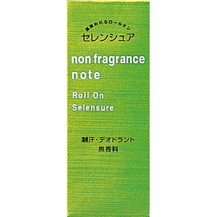

返回列表
产品名称：セレンシュア ロールオンNB

資生堂 セレンシュア ロールオンNB ３０ｍｌ（医薬部外品）
メーカー 資生堂
JANコード 4901872360284
商品の特徴
肌に直接ぬるロールオンタイプ。乾きが早く、さわやかな清涼感で、汗をかいてもべたつかず肌サラサラ。
成分・分量
-
用法及び用量
＜使用方法＞
○上下に軽く2～3回ふってから、ワキの下にぬり、液が乾いてから衣服をおつけください。
○ボールがまわらないときは、指でボールをまわしてからお使いください。
○肌の水気や汗をふきとってからお使いください。